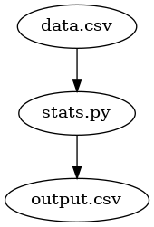

Makefile: Towards Reproducible Research-based Programming
Table of Contents
I've been experimenting with make to deliver research projects. It has been to
be a great way to alleviate some particular pain points that
arise from these types of projects. Sufficed to say, the make tool has
been an excellent addition to my workflow, one that I shall continue
to use and experiment with.
In this post, I would like to introduce you to make and how it can be used to
help make research more reproducible and, ultimately, easier to manage
complicated experiments. We shall first look at the problems that normally
appear in research programming to give adequate background reason as to why
make may be useful in this area. Then, after these problems have been
understood, we will look at the basics of make and the construction of
makefiles to both quickly automate our research while making it more
reproducible for others.
DISCLAIMER: I am by no means an expert in writing makefiles. And if you are, you may think some of the examples are not the optimal way to encode makefile rules. Indeed, many of the makefile examples will be somewhat more verbose than what you would want to use in production-grade products. However, for the purpose of this discussion, optimal and efficient makefiles are not conducive for learning about the basics. It may be better to create simple rules that work first, then once you're comfortable, making the makefile more complicated yet concise in the name of efficiency.
1 Problems that arise during the course of research
When conducting a research project, though the objective or hypothesis will be clearly defined, the steps involved to answer research questions are usually not. In essence, during the course of the project, the code-base, and even the data itself, will undergo several iterations of changes and experimentation with different methodologies. The consequence being that you'll rarely run through the project from start to finish, let alone the project structure before hand.
Change is not inherently a problem, indeed, it is a necessity for research and experimentation. But, the issue lies in change that is not properly managed.
When the data changes, any existing experiments will have to be re-run, or else, the results reported on the data should be considered stale. Changes to data occur frequently. Though raw data will never be modified in place, part of the research will involve cleaning, transforming, and potentially summarising the data before any method is applied to it. In principle, it would be ideal for the data to be completely clean and ready before any methods are used. However, problems do occur, and you may find yourself going back to the original data source and further accounting for some edge case that your current data cleaning does not catch. If you have already run experiments on the previous iteration of the 'cleaned' data, they will need to be re-run. Moreover, any other sources that directly depends on this data, such as summarised statistics, will also have to be recalculated. There is a significant overhead in remembering what needs to be updated at the moment of any change to the underlying data.
CHANGE also has an effect on your code-base. Whether it is because of parameter tuning, bug fixes, or performance improvements, any change to the code-base could have both visible and invisible effects to the performance of the methodologies you are testing. To account for change (such as bug fixing or refactoring) in your program, it is desirable to construct unit tests. But while unit tests are a good and common practice, they may miss use cases and silent errors that come from integrating multiple scripts that you write throughout the project. Changes to your code base should be recorded, tested, and if possible, experiments should be re-done to ensure that the results you are reporting are the true results of the program.
When these multiple factors of change are combined, it can be very difficult for
others to reproduce your results. make can help with some of these issues
by keeping track of what files have been changed, in addition to understanding
the dependencies between files. We may use make to 'compile'
our research project, allow others to easily reproduce our results, as well
as automate our workflow.
2 What is Make and Makefile?
Make is a application often used to compile other larger and complex applications. By keeping track of dependencies, in addition to working on what needs to be recompiled, it can make compilation of software easy.
The input to make is a Makefile. A Makefile simply tells make what to do. In
this file, we have a list of targets, which when provided to make as an
argument, will execute the rules for this target, in addition to executing rules
that this current target depends on.
Typically, the makefile contains the following:
target: dependancies # optional rule to make target
Our target is something we wish to create, and may depend on a number of different files. To make the target, we apply one or more rules such as executing a python program.
We shall discuss how to use make and indeed write makefiles in order to make
our research project for us.
3 Using Makefile for research programming
Using make may then change the way we view our project, from a process where developing the code and algorithms are objective, to one where the result our output of said algorithm is the objective. Indeed, we may view our research as the application, and both our code and data as something that needs to be compiled in order to produce our output, the report on the research.
3.1 A simple example
Let us begin with a very basic example. Our project is going to be very simple: we have a simple data source, a CSV file. With this data, we need to measure the mean and standard deviation. Not a very exciting example, and it certainly won't win you a noble prize, but it will highlight how we might create our simple makefile to automate this process.

In this example, we have two starting files: (1) our data source –
data.csv; and (2) our program with which we can import the data source and
compute the mean and standard deviation, aptly named stats.py. This
program needs no command line arguments, but when called it simply
looks for data.csv, computes the statistics and writes a new file
output.csv.
In the same directory, we shall create a new file
called Makefile. The contents of our makefile are going look like this:
output.csv: data.csv stats.py
python stats.py
This simple example includes the majority of what you will be doing in
makefiles. We have a target in this case output.csv. We can tell
its a target because it is followed by a colon ':'. This is the command
we will pass to make when we wish to execute our make file.
Next, we specify our (optional) dependencies. Our target depends on
two files: data.csv and stats.py. This is simple a space
delimited list of files after our target. Simply stated, we are
telling make that in order to create our CSV file, both data.csv
and stats.py must exist. But there's more: make is smart and by
listing the dependencies, we are telling make that if
either our data or our program changes then output.csv will need to be
re-made. If they haven't change and output.csv already exists, make
will tell us that nothing more needs to be done (it doesn't bother
executing the program twice).
The next line tells make what to do in order to create our target, our
rule. In this case we call python stats.py. Like python, makefiles
are indentation delimited. But unlike python where this indentation
can be done either with tabs or spaces (but definitely not both),
makefiles are always indented with tabs.
To run this makefile, we type make output.csv into the command
line. If everything is setup correctly, make will run python
stats.py and our output.csv will be created.
3.2 A more complicated example
Suppose we have two algorithms and we wish
to generate some comparative metrics. Like the previous example, we
have a single data source called data.csv, but this time, we have
two python programs: one for each algorithm. Each of these programs
will create its own CSV file output. The process flow will look like
this:

In this case, we wish to execute both python programs to create both outputs.
output_1.csv: data.csv algorithm_1.py python algorithm_1.py output_2.csv: data.csv algorithm_2.py python algorithm_2.py
This time we have created two targets, one for each of our output csv files. Each target has their own dependencies and the rule to create the different outputs.
In order to actually create the CSV files, we will type:
make output_1.csv make output_2.csv
into the command line. make is of course happy to take these two
requests, but there is more onerous on us to make sure to execute
both commands. While this is okay for these two CSVs, it will become
more laborious when we have more.
To overcome this issue, we can use a PHONY target. A phony target
is one that won't exist but serves as a alias to provide make with
a command we can type. In our previous example, both output_1.csv
and output_2.csv were files that will exist after make has executed
the two rules. With a phony target, however, make won't bother to look
for the target's existence.
We can create a phony target with:
.PHONY: output output: output_1.csv output_2.csv
Our phony target, named output, depends on both our CSV
files. Now, we can get make to create both of these output files with a
single command: make output.
3.3 Multistage processing
Our previous examples have consisted of only one processing step, we take our input data, and produce an output. In these cases, keeping track of what is up-to-date and what still needs to be executed is easy enough. But when we introduce processing pipelines where the output of one program feeds into another, things can get a little more complicated.
We have introduced a significantly more complicated process. We use a
c++ program squares.cpp to take all of the data in the CSV, square it, and save
the intermediate version as squared_data.csv. Processes such as this may occur
when the dataset is large enough that we apply computations in batches or jobs
via high-performance computing. In these cases, it is better to keep the
original data source and preserve its mutability.
With this squared data, our third algorithm – algorithm_3.py – is executed to
produce output3.csv. To automate this process, we will add the following rule
to our makefile:
output_1.csv: data.csv algorithm_1.py python algorithm_1.py output_2.csv: data.csv algorithm_2.py python algorithm_2.py output_3.csv: data.csv squares.cpp g++ -i squares.cpp squares.o ./squares.o python algorithm_3.py .PHONY: outputs outputs: output_1.csv output_2.csv output_3.csv
and all outputs can be made with make outputs.
Both algorithm 1 and 2 are the same as the previous examples, but
algorithm 3 has more computation steps. First, we must ensure that our c++
code is compiled, then we must produce the squares_data.csv (done by
./squares in this example), and then finally run python algorithm_3.py to
produce the results.
This is great, but what if algorithm 2 depended on both data.csv and squared_data.csv?

We could change our output_2.csv target to something like this:
output_2.csv: data.csv squared_data.csv algorithm_2.py
g++ -i squares.cpp squares.o
./squares.o
python algorithm_2.py
But we may notice that the compilation of the c++ program occurs twice. So, instead, lets make the executable a target within its own right:
squares.o: squares.cpp
g++ -i squares.cpp squares.o
In addition, we can also create a target for the squared_data.csv as
we only with to create it once.
squared_data.csv: squares.o
./squares.o
and we'll amend our previous versions of targets output_2.csv and
output_3.csv to depend on this executable already existing and being
up-to-date.
output_2.csv: data.csv algorithm_2.py squared_data.csv python algorithm_2.py output_3.csv: data.csv algorithm_3.py squared_data.csv python algorithm_3.py
This way, both the compilation and creation of squared_data.csv
happens once.
Our final makefile shall look like the following:
output_1.csv: data.csv algorithm_1.py python algorithm_1.py output_2.csv: data.csv algorithm_2.py squared_data.csv python algorithm_2.py output_3.csv: data.csv algorithm_3.py squared_data.csv python algorithm_3.py squares.o: squares.cpp g++ -i squares.cpp squares.o squared_data.csv: squares.o ./squares.o .PHONY: outputs outputs: output_1.csv output_2.csv output_3.csv
and all output CSV files can still be created with one single command:
make outputs. If we wish to just execute one pathway or algorithm,
we can just specify that particular target. For example, if we just
wish to run algorithm 1, we can run make output_1.csv.
3.4 Creating a summarised report
We can go further and improve our process of research. Now that we have our outputs from each of the algorithm, we may summarise them and produce a final CSV file to present in a report.

Our summarise.py takes all the results from each algorithm, provides some
summary statistics, and outputs a single CSV file that is suitable for a
report.
If we use latex, and the PGFplotstable package, we can also automate the process of getting these results into our report.
\documentclass{article} \usepackage{pgfplotstable} % must use this package \title{Report} \begin{document} % import our table from the CSV file \begin{table} \centering \caption{My table} \label{tab:my_table} \pgfplotstableread[col sep=comma]{final_results.csv}\data \pgfplotstypeset[ % column options ]{\data} \end{table} \end{document}
Now, every time our results file changes, either because we added more algorithms, or we have modified the code or data, our report will always be up to date.
PGFPlotstable is a very useful package for importing, formatting, and even doing basic evaluations of data. Moreover, if you combine this package with the regular PGFplots, you data tables and plots can be automatically kept in sync with one another.
We can go further and add the compilation of this latex document to our makefile:
.PHONY: report report: final_results.csv report.tex pdflatex report.tex
And compile it using make report. These is an added benefit here that we may
also add the recompilation rules for if our document contains a bibliography:
.PHONY: report report: final_results.csv report.tex references.bib pdflatex report.tex bibtex report.aux pdflatex report.tex pdflatex report.tex
4 Variables and writing less code
Our final makefile has a lot of repeated content:
output_1.csv: data.csv algorithm_1.py python algorithm_1.py output_2.csv: data.csv algorithm_2.py squared_data.csv python algorithm_2.py output_3.csv: data.csv algorithm_3.py squared_data.csv python algorithm_3.py squares.o: squares.cpp g++ -i squares.cpp squares.o squared_data.csv: squares.o ./squares.o .PHONY: outputs outputs: output_1.csv output_2.csv output_3.csv final_results.csv: output_1.csv output_2.csv output_3.csv python summarise.py .PHONY: report report: report.tex final_results.csv references.bib pdflatex report.tex bibtex report.aux pdflatex report.tex pdflatex report.tex
and if we wish to, for example, change the name of the original input data source from
data.csv to input_data.csv, we must in fact change this name in multiple
places in the makefile, ensuring that all of the dependencies are up to date.
In a makefile, using variables may overcome this limitation. Let's begin by first defining a number of variables to remove the duplicated content.
# our new variables DATA = data.csv SQDR_DATA = squared_data.csv PYTHON_EXE = python RESULTS = output_1.csv output_2.csv output_3.csv output_1.csv: $(DATA) algorithm_1.py $(PYTHON_EXE) algorithm_1.py output_2.csv: $(DATA) algorithm_2.py $(SQRD_DATA) $(PYTHON_EXE) algorithm_2.py output_3.csv: $(DATA) algorithm_3.py $(SQRD_DATA) $(PYTHON_EXE) algorithm_3.py squares.o: squares.cpp g++ -i squares.cpp squares.o squared_data.csv: squares.o ./squares.o .PHONY: outputs outputs: $(RESULTS) final_results.csv: $(RESULTS) $(PYTHON_EXE) summarise.py .PHONY: report report: report.tex final_results.csv references.bib pdflatex report.tex bibtex report.aux pdflatex report.tex pdflatex report.tex
Variables are declared and used much like in bash, where the = is used to
assign a value to the variable name and $(...) uses the value of the
variable.
If we now wish to change the name of data.csv we only need to change it in one
place of the makefile. We have also replaced the name of the python executable
so if we decide, for example, should we wish to use a 'virtualenv' version of python, we
can quickly change this too.
In addition to regular variables, make includes a number of magic or automatic
variables to further reduce the amount of duplication in our makefile. Two of
the automatic variables you will find yourself frequently using is $@ and
$<. The first, $@ is an automatic variable for the target, and $< is the
first dependency. We can use both of these in the following way:
squares.o: squares.cpp g++ -i $< $@ .PHONY: report report: report.tex final_results.csv references.bib pdflatex $< bibtex $@.aux pdflatex $< pdflatex $<
In the example above, we compiled our c++ program using g++, specifying
the input file with the $< variable that references the first dependency for
our target, which in this case is squares.cpp. We've told g++ that we wish
for the output executable to be called squares.o using our target variable,
$@.
We have used a similar methodology for compiling our latex file.
make includes a number of automatic variables to help reduce the size of your
makefile. You can find the list and their usage here: https://www.gnu.org/software/make/manual/html_node/Automatic-Variables.html
Our final makefile is:
# our new variables DATA = data.csv SQDR_DATA = squared_data.csv PYTHON_EXE = python RESULTS = output_1.csv output_2.csv output_3.csv output_1.csv: $(DATA) algorithm_1.py $(PYTHON_EXE) algorithm_1.py output_2.csv: $(DATA) algorithm_2.py $(SQRD_DATA) $(PYTHON_EXE) algorithm_2.py output_3.csv: $(DATA) algorithm_3.py $(SQRD_DATA) $(PYTHON_EXE) algorithm_3.py squares.o: squares.cpp g++ -i squares.cpp squares.o squares.o: squares.cpp g++ -i $< $@ .PHONY: outputs outputs: $(RESULTS) final_results.csv: $(RESULTS) $(PYTHON_EXE) summarise.py .PHONY: report report: report.tex final_results.csv references.bib pdflatex $< bibtex $@.aux pdflatex $< pdflatex $<
which automates our research process:

Even if we move or send our files to a different computer, all we have
to do to run our project from start to finish is make report.
5 Conclusion
make can be an excellent addition to any research project. It tracks
dependencies between files, only re-executes what is considered stale and all
the while providing the developer with a simple interface to execute multiple
commands with just a single target.
If you use make and create a simple but yet powerful makefile, you can
automate many of the laborious tasks that come with organising research-based projects.